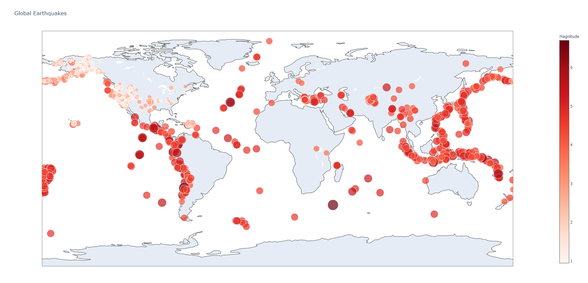
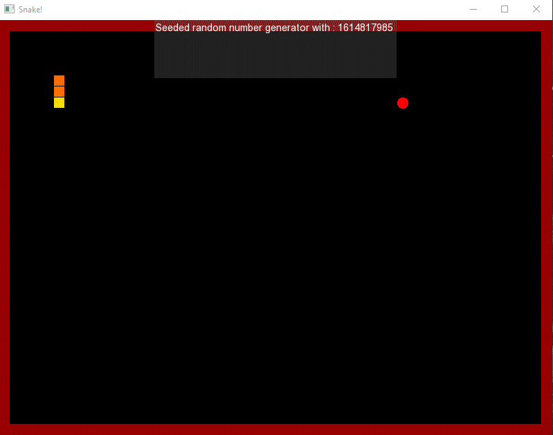
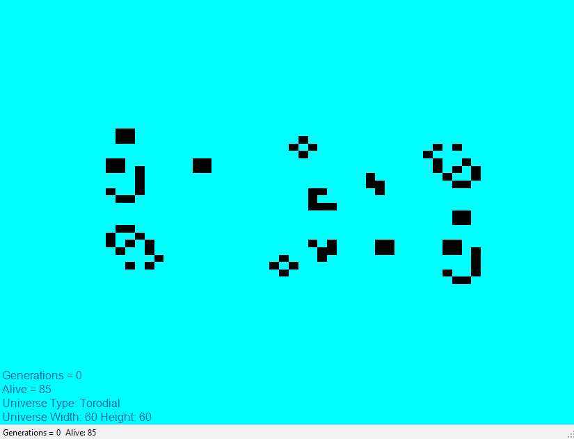

Projects
Nasa Project | Undisclosed
Collaborated with producers, developers, and designers on a team of 30+.
Alien Invaders | Classic Arcade Game
A new twist on a nostalgic title. Classic top-down alien shooter. Collect powerups and battle endless waves.
Craigslist Clone | Web Scraper | Django
Surf craigslist in style with My List. A clean and user-friendly interface to craigslist, using cards. Links take you directly to the craigslist post of interest.
Floyd Steinberg Dither Program | Image Manipulation
Turns images into works of art, as if the entire picture was made of dots. The program implements the Floyd-Steinberg dither algorithm to manipulate the pixels in an image, giving the artistic dither effect. Zoom in close to compare the images.
Fireworks Simulation | Physics Engine
Generates a unique firework show right on your desktop using realistic physics, including gravity, acceleration, and velocity.
Global Earthquakes Visualization | Data Science
 Click For Interactive MapVisualize earthquake data on a global map.
Weather App | Android and API
Get the weather at your location or search for any city. Calls weather API to get data for your location then displays the information in a user-friendly way.
Augmented Reality | Fitness Mobile App


Designed and developed an augmented reality runner application for android mobile. The app shows an AR runner model in front of the user while they are running. The app helps the user pace themselves while running and improves their performance.
Caesar Cipher Encryption and Decryption Program
The program allows the user to type out a message and enter a key to encrypt, which later can be decrypted by entering the encrypted text and the correct key. Two users can send encrypted messages to each other which then can be decrypted by the other user with the correct key.
Machine Learning Powered Analysis of Titanic Passengers


Cleaned and analyzed data gathered about the passengers of the Titanic. Created a machine learning model and validated its accuracy and precision. Used the model to gain insights and interesting findings about the passenger’s and their survival of the Titanic tragedy.
Classic Snake Arcade Game | Graphics API
Desktop implementation of the classic snake arcade game. This showcases the use of a third-party graphics API and implementation of game logic and OOP.
Conway's Game of Life Implementation
Cellular automata implementation of the orginal which was created by John Conway. A program with simple rules and wonderous outcomes.
Prime Number Visualization
See the prime numbers in a new and interesting way with this visualization. Prime numbers plotted with polar coordinates reveals a spiral pattern.